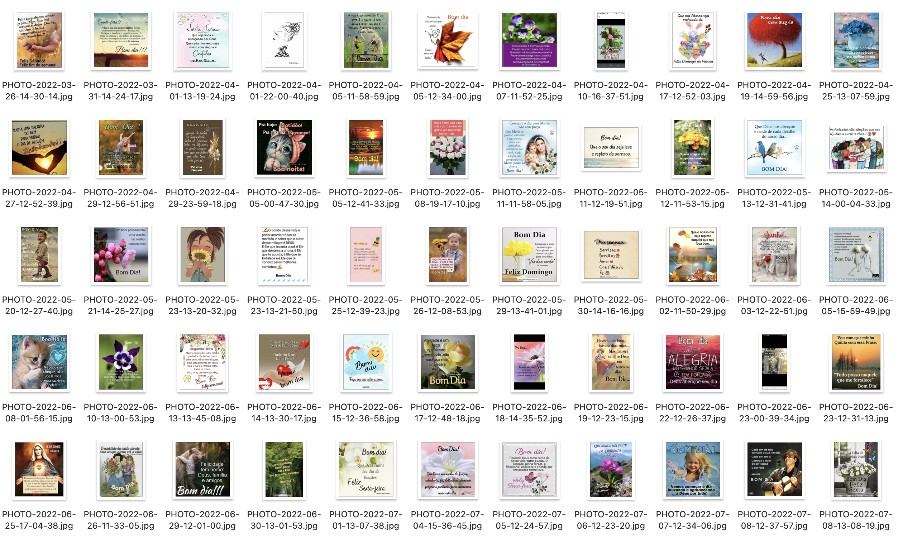

I have a collection of downloaded morning greeting images from my Whatsapp family groups.
Sharing these kitsch images has been a common practice in my family, specially from older members and during the COVID-19 period,
and I have been saving them since 2020. They are a mix of images or illustrations (or both), often accompanied by cheerful
messages to start the day on a positive note.
I have been noticing a gradual decline of the use of these images, and also a change in the style,
with images and message video now being generated by AI tools, characterized by the use of 3D graphics and hyper-realistic images.
In a sense, archiving these images could act as a preservation, showing a shift in the way we interact and express ourselves online with the arrival of AI-generated content.